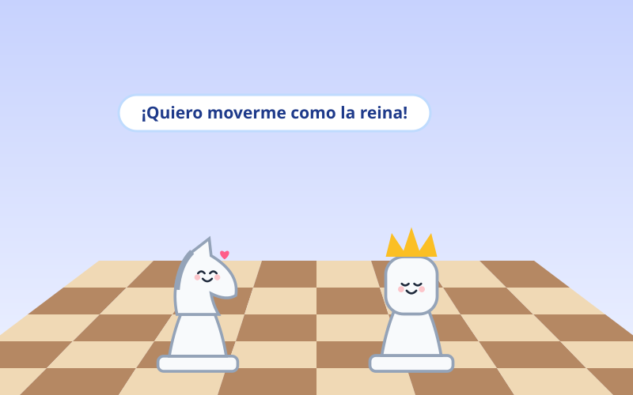
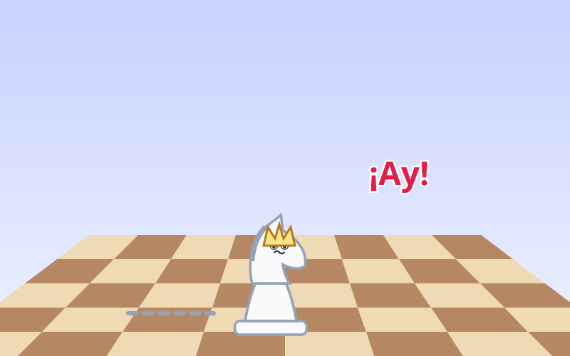
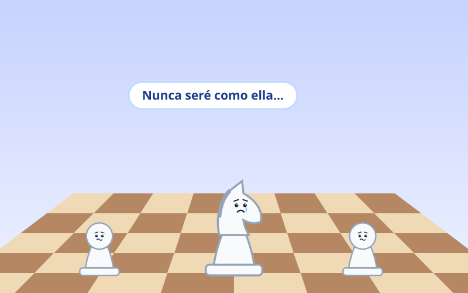
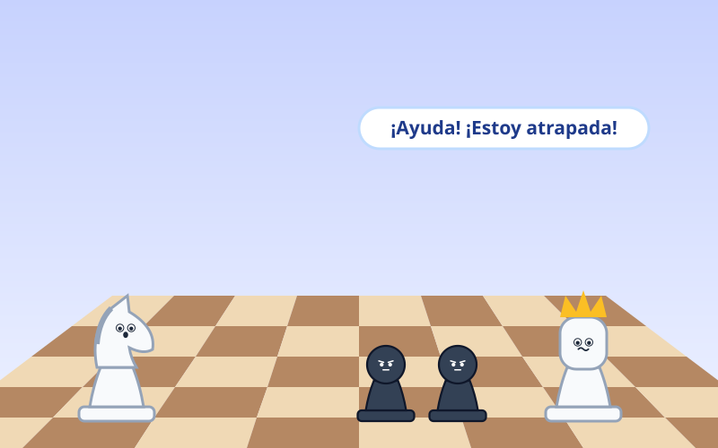
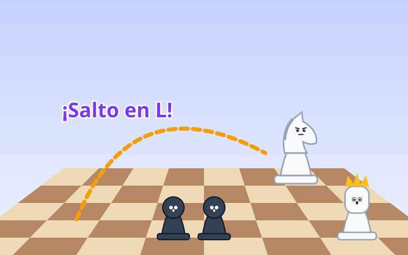
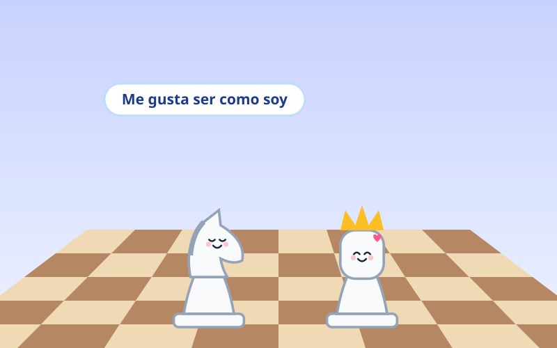

En un tablero de ajedrez vivía Saltarín, un caballito blanco. Admiraba mucho a la reina, porque podía moverse en línea recta por todo el tablero.
—¡Quiero moverme como la reina! —suspiró Saltarín.

Saltarín se hizo una corona de papel y trató de moverse en línea recta, como la reina. Pero sus patas no estaban hechas para eso, ¡y se tropezó!
—¡Ay! No me sale —dijo, sobándose la cabeza.

Saltarín se sentó en una esquina del tablero, muy triste. Pensaba que su forma de moverse, saltando en forma de L, no servía para nada.
—Nunca seré como ella… —dijo con la cabeza baja.

Un día, durante una partida, la reina quedó atrapada detrás de una pared de peones negros. Ninguna pieza podía pasar para ayudarla.
—¡Ayuda! ¡Estoy atrapada! —gritó la reina.

Entonces Saltarín recordó algo: ¡él era la única pieza que podía saltar por encima de las demás! Tomó impulso y dio su famoso salto en L.
—¡Mi salto puede llegar donde nadie llega! —gritó feliz.

La reina quedó libre y le dio las gracias. Saltarín tiró su corona de papel: ya no quería ser otra pieza.
—Tu salto es único, Saltarín —le dijo la reina.
—Ahora lo sé. ¡Me gusta ser como soy!
Cada uno tiene algo especial. No necesitamos ser como los demás: cuando creemos en nosotros mismos, descubrimos lo que solo nosotros podemos hacer.